Exploit GPU using SDF and Ray Marching
Table of Contents
Abstract
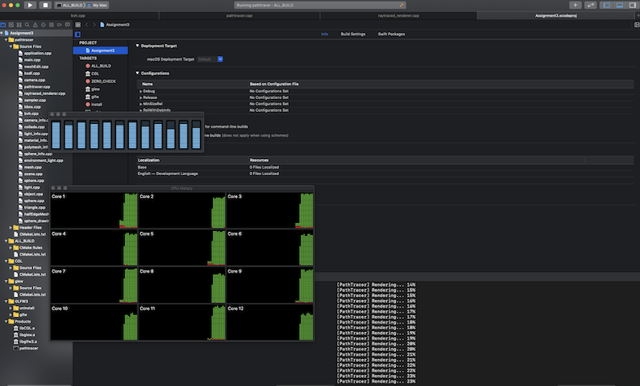
Figure 1: A simple raytracing CPU usage
Mesh is expensive. For example, a simple raytracing using a KD tree on a bounding volume hierarchy takes multiple recursive calls, making parallelization difficult. With this naive approach, advanced techniques such as real-time global illumination are impossible. This paper analyzes various techniques to improve performance in rendering a scene. First, I introduce ray marching how this approach benefits the rendering problem. Second, I explain the sign distance field(SDF) and its usage. Third, I represent a blocky mesh into voxels. Lastly, I talk volumetric primitives and the challenge.
Technical approach
Part1: Rendering Framework
Selecting renderer
OpenGL is a bloated mountain to climb. It's a mystical land where you offer prayers to priestesses on high in hopes of the sky changing color. Vulkan is the government office telling you; you still don't have all the necessary forms to proceed. - Dustin Land
Originally, the goal of my project was too accelerated raytracing that maximizes GPU usage and minimizes the CPU workload. For this, I needed a minimal renderer that loads an object file and texture and a shader pipeline for GPU. To fully utilize the GPU, I had three choices: Metal, OpenGL, and Vulkan. I ran the raytracing example from Apple, and it was very fast and almost real-time. However, they already implemented raytracing optimization in their code, and I did not want to reinvent wheels. Besides, the language was objective-c, which would not be a great choice for learning and apply in two weeks. Now, I have two choices: OpenGL and Vulkan. I would have to use the previous version of OpenGL and Apple deprecate it. On the other hand, Vulkan is emulated on mac MoltenVK. I came across the following quote from a graphics programmer Dustin Land. In computer science, there is no magic. I am supposed to know why it works. The quote really resonated with us, and I started setting up Vulkan.
Vulkan is verbose!
It did not take much time to realize the verbosity of Vulkan. A simple object rendering with texture requires 1700 lines of code, and understanding the graphics pipeline takes hours of toiling.
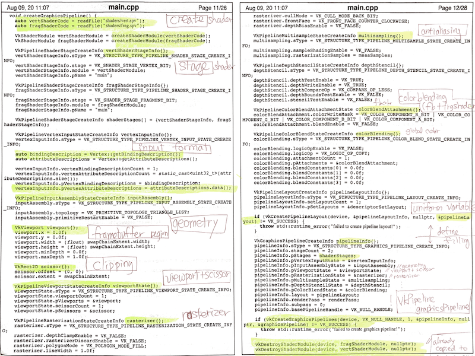
Figure 2: createGrahicsPipeline in vulkan
Part2: Ray Marching
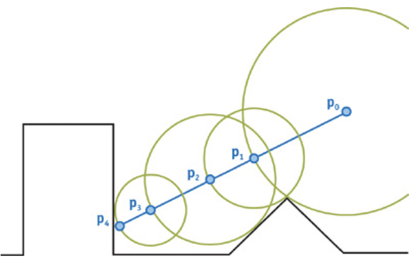
Figure 3: ray marching algorithm
After setting up, I tried to find a way to exploit GPUs. I found a raytracing algorithm called raymarching on shadertoy.com. The algorithm is finding the nearest distance between the origin and hit point using a signed distance function. It iteratively computes the distance to objects until it converges. Moreover, the algorithm works on the fragment shader, it is parallelizable, and I see an instant change of lighting.
Figure 4: ray marching on a fragment shader
Part3: Signed Distance Field
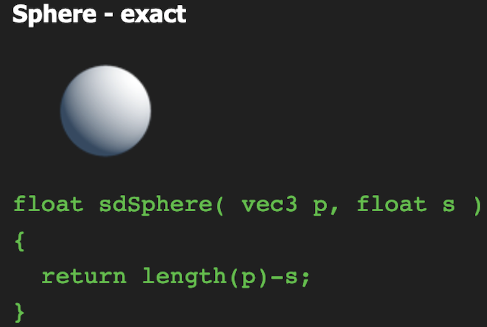
Figure 5: SDF for a sphere(Cribbed from https://www.iquilezles.org/)
The core of the raymarching algorithm is the signed distance function. For instance, positive distance implies the point is outside the object, and negative does the opposite. The major problem arises at this point. Mesh is really hard to apply for the signed distance function! Suppose we want to know the closest hit using meshes. We would have to iterate all primitives, triangle, in this case, takes the complexity proportional to the number of primitives. Worse yet, we do this every raymarching step. This is no better than classic raytracing using an intersection. We need another representation of a scene for getting better performance.
Part4: Move from mesh to voxels
Here, we use the Vokselia Spawn obj file(http://casual-effects.com/data/index.html) that consists of two million vertices.
|
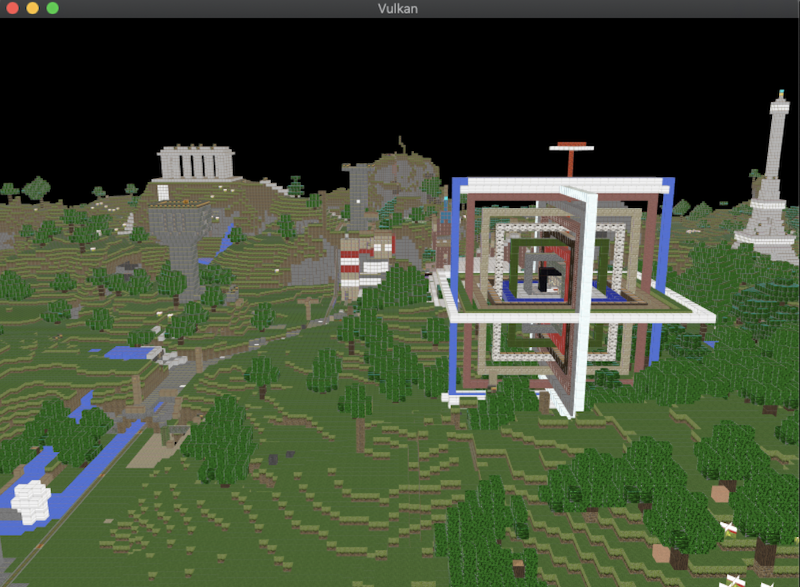
|
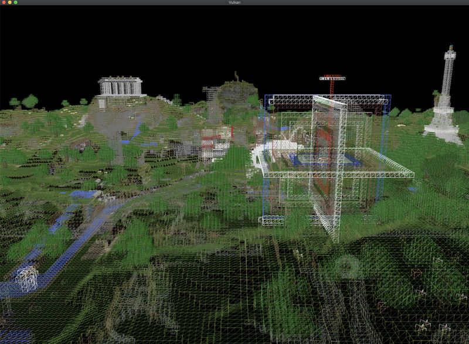
|
|
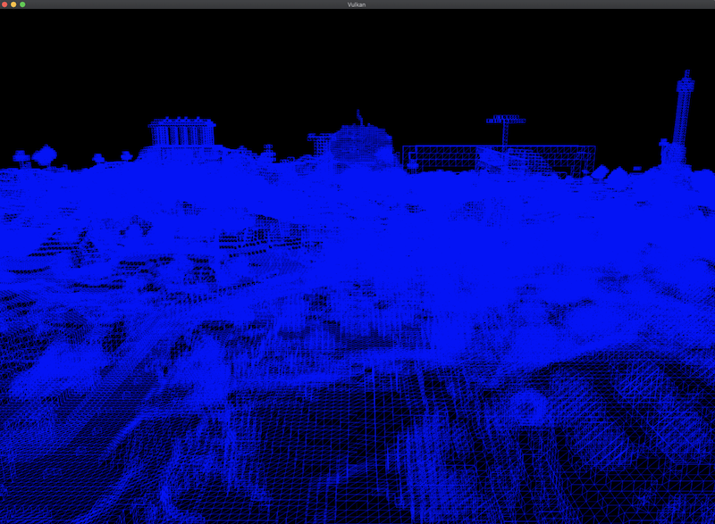
|
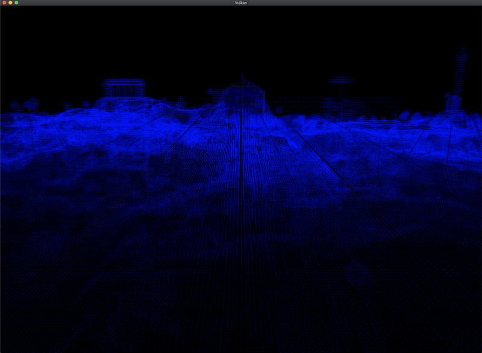
|
|
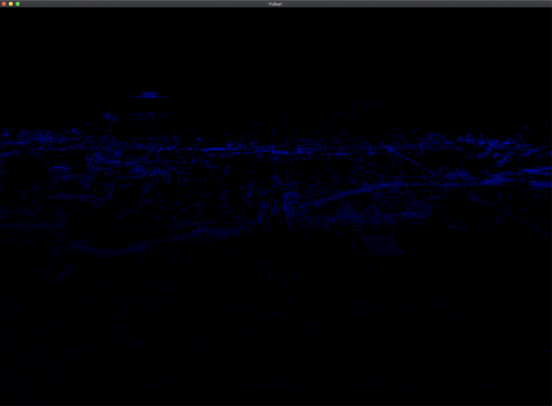
|
|
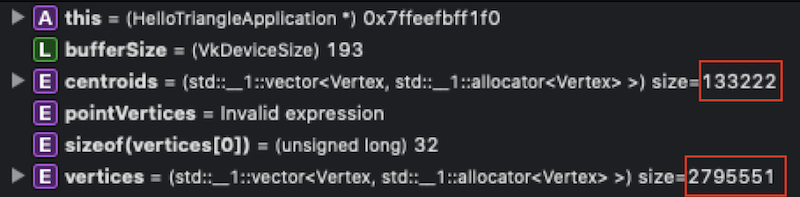
|
Converting a complex scene from mesh to voxels would be time-consuming, and I had to take into account texture loss. Instead, I got an object file that contains a blocky scene that consists of meshes(triangles).
After applying my logic, I was able to reduce a significant amount of memory.
Geometry Shader
A vertex and fragment shader cannot produce additional vertices to be rendered. Although we reduced a significant amount of memory using voxel centroids, we must recreate from four to 24 vertices per centroid to interpolate fragments on the screen. Geometry shader will do this job.
// Adapted from https://github.com/cleak/VoxelPerf/blob/master/Shaders/sdf_shape.frag #version 450 #extension GL_ARB_separate_shader_objects : enable layout(binding = 0) uniform UniformBufferObject { mat4 model; mat4 view; mat4 proj; } ubo; layout(points) in; layout(triangle_strip, max_vertices = 12) out; void AddQuad(vec4 center, vec4 dy, vec4 dx) { gl_Position = center + (dx - dy); EmitVertex(); gl_Position = center + (-dx - dy); EmitVertex(); gl_Position = center + (dx + dy); EmitVertex(); gl_Position = center + (-dx + dy); EmitVertex(); EndPrimitive(); } void main() { vec4 center = gl_in[0].gl_Position; mat4 mvp = ubo.proj * ubo.view * ubo.model; vec4 dx = mvp[0] / 2.0f; vec4 dy = mvp[1] / 2.0f; vec4 dz = mvp[2] / 2.0f; AddQuad(center + dx, dy, dz); AddQuad(center - dx, dz, dy); AddQuad(center + dy, dz, dx); AddQuad(center - dy, dx, dz); AddQuad(center + dz, dx, dy); AddQuad(center - dz, dy, dx); }
My original plan was to generate primitives from the centroids. Unfortunately, MAC does not support geometric shaders. I had to stop this and started working on the fragment shader for voxel rendering.
Part5: Raymarching on voxel
Plane marching
) 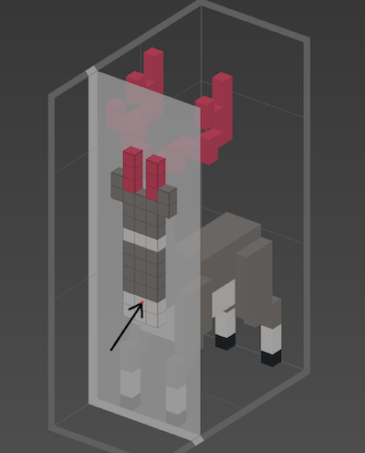
How could I simplify meshes? Voxel would do the job. Like a pixel, the voxel is a cube that consists of 3D data. We can apply the raymarching algorithm much efficiently because the time complexity reduces to the number of planes that consist of the voxel grid. If a plane contains at least one voxel, we check if it is a hit point by rounding the current location.
Problem
) 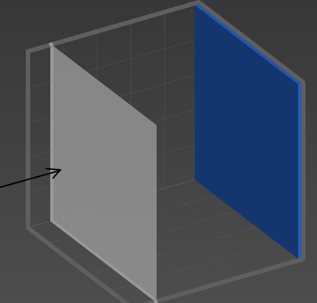
In the previous approach, a problem arises when we plane-march the voxel grid until the very end. Moreover, we can only march with a small size, depending on the length of a voxel. We fix this problem by caching the distance to the nearest hit. In this case, we can safely "jump." when we march the ray.
Sphere marching
) 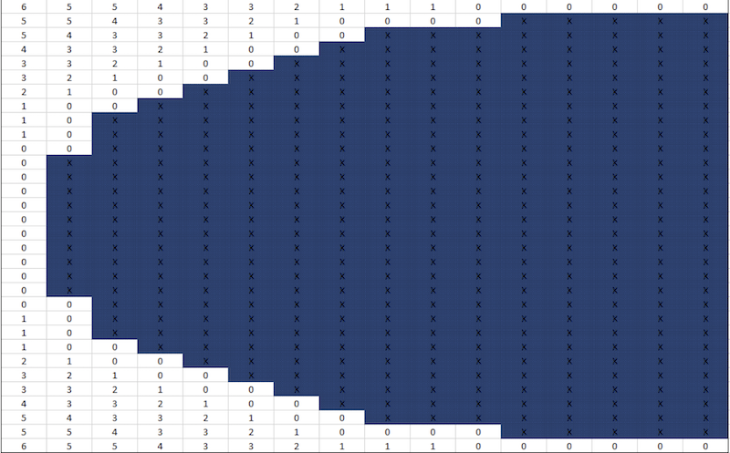
Sphere march is great, but it takes O(n2), which means a lot. Instead of catching the biggest sphere originated from the current the point, caching the biggest cube would boost time complexity to O(N log N) by using a summed-area table and binary search.
Part5: Voxels to Volumetric Primitives
Suppose we have a scene that has volumetric primitives such as the cube, sphere, cylinder, and cone. Is a voxel structure the only way to accelerate the raymarching? Again, the performance of the raymarching depends on the signed distance function. For example, SDFs for sphere and box is a simple quadratic calculation.
// From Inigo Quilez (https://www.iquilezles.org/www/articles/distfunctions/distfunctions.htm) float sphere( vec3 p, float s ) { return length(p)-s; } float sdRoundBox( vec3 p, vec3 b, float r ) { vec3 q = abs(p) - b; return length(max(q,0.0)) + min(max(q.x,max(q.y,q.z)),0.0) - r; }
Since it lowers so much complexity, I believe that breaking the mesh into the voxels and volumetric primitives will be very helpful for reducing rendering complexity. This is a super exciting topic but I did not have enough time for this. I searched online and found a paper that seems relevant to this task. Learning Shape Abstractions by Assembling Volumetric Primitives
Problems Encountered
Vulkan framework
Again, a simple rendering program takes up 1700 lines of code, and it was extremely challenging to set up correctly. Moreover, applying my idea required me to understand what each component does. I focused on the createGraphicsPipeline. Soon, I found that most of the logic follows a similar structure. For instance, the initial code is all about making a struct and copy the data or memory-map to GPUs. Once I realized this, the code seems so natural to me.
Geometry shader
This is a totally new concept, and I did not understand why this is necessary. It turned out that vertex and fragment shader has limited access to the vertex and geometry shader can generate an arbitrary number of vertices. To write a geometry shader, I had to make a non-trivial modification inside the Vulkan Framework. Khronos webpage was very helpful in understanding the struct definition.
Uniform Buffer Maximum Size
To fully utilize voxel structure in a shader, we must be able to access a mapping variable that determines if the current position is occupied with a voxel. For example, our voxel grid consists of 385 * 387 * 78 elements, roughly 11M byte. On macOS, the maximum size of the uniform buffer is 65536, which means that this is not possible. To mitigate this problem, we need to implement a 3D sampler similar to the texture sampler.
Lesson learned
Vulkan Framework
Learning the Vulkan framework was one of my goals before I take this course. It consumed a huge portion of precious project time, but now I get the hang of it. I would like to add more features such as UI interaction, global illumination, reflection and refraction, and material modeling in the future. Also, I would like to apply deep learning techniques to shape abstraction.
Goal setting
It is very important to set up a clear goal at the beginning of the project. My original goal was to implement a ray marching on a shader that utilizes GPUs. I started learning Metal. It did not work out well. I decided to use fragment shader and do raymarching. However, the scene could contain only hard-coded primitives, and I wanted to use a complex mesh. This turned out to be a bad decision because of the subtask that entails. Clearly, the idea was beyond my capability for the two-week project, and I overestimated myself. Learning Vulkan and GLSL shader take time as well. However, now I know what is possible and learned what it is like to do graphics programming. It is a combination of mathematics, physics, and computer system that needs a significant amount of time and effort.
Results
Your final images, animations, video of your system (whichever is relevant). You can include results that you think show off what you built but that you did not have time to go over on presentation day.
References
- Vulkan Tutorial https://vulkan-tutorial.com/
- Path Tracer MIS https://www.shadertoy.com/view/ldBcDt
- Object Files (.obj) http://paulbourke.net/dataformats/obj/
- Ray Marching for Dummies! https://www.youtube.com/watch?v=PGtv-dBi2wE
- Gradient of a scalar field https://www.youtube.com/watch?v=OB8b8aDGLgE
- Quads All the Way Down: Simple Voxel Rendering https://medium.com/@calebleak/quads-all-the-way-down-simple-voxel-rendering-fea1e4488e26
- LearnOpenGL - Geometry Shader https://learnopengl.com/Advanced-OpenGL/Geometry-Shader
- OpenGL Tutorial 49: Geometry Shader Introduction https://www.youtube.com/watch?v=C8FK9Xn1gUM
- Deriving the SDF of a box https://www.youtube.com/watch?v=62-pRVZuS5c
- Marching Cubes https://www.youtube.com/watch?v=M3iI2l0ltbE
- binvox 3D mesh voxelizer https://www.patrickmin.com/binvox/
- The basics of GPU voxelization https://developer.nvidia.com/content/basics-gpu-voxelization
- Raymarching Voxel Rendering https://medium.com/@calebleak/raymarching-voxel-rendering-58018201d9d6
- McGuire Computer Graphics Archive http://casual-effects.com/data/index.html
- Double Buffering https://www.youtube.com/watch?v=tfzCcN2aIhI
- Phong Shading with a fragment shader http://www.cs.toronto.edu/~jacobson/phong-demo/
Contribution
This is an individual project.
- Setting up a Vulkan rendering framework that loads an object, material, and texture files.
- Wrote raymarching in a fragment shader
- Wrote mesh-voxel conversion
- Wrote voxel centroid - cube conversion in a geometry shader